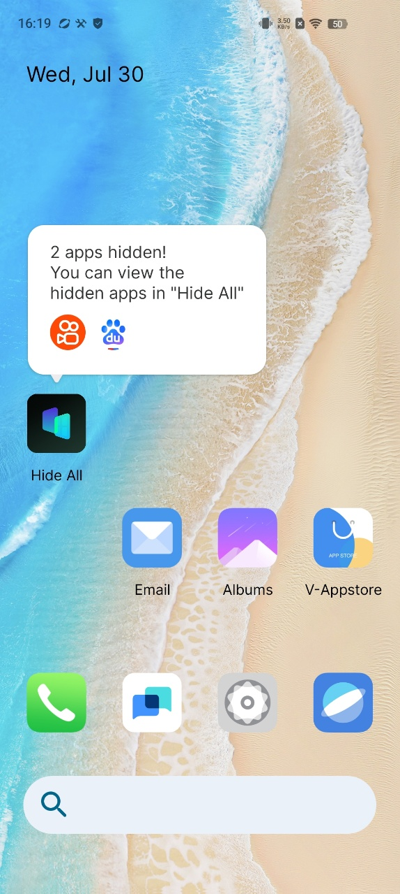

Moto Secure is your go-to destination for all the vital security and privacy features on your phone. We've made it easy.
Manage network security, control app permissions, and even create a secret folder for your most sensitive data.
Whether it's making sure Google Play downloads are safe or adding an extra layer of protection, Moto Secure is all you need to know to keep threats at bay.
1. Hide apps in a secure folder
Keep your information private by putting sensitive apps in a secure folder. You can lock apps in the folder, hide the folder, and limit what information gets shown in notifications from your secure apps.
Set up the folder
- Open the Moto Secure app. Or, go to Settings > Security & privacy > More security & privacy.
- Tap Secure folder, then unlock your phone.
- Choose a lock type for your secure folder and set up the lock:
- Pattern: Draw a pattern on a grid.
- PIN: Enter a four to sixteen digit numeric code. Longer PINs are more secure.
- Password: Enter four to sixteen letters, digits, or symbols. A long, strong password is the most secure option.
- To add apps, tap +.
You'll now see Secure folder in your app tray or on your home screen.
- Follow the on-screen prompts
- Choose a lock method
- Touch + to add desired apps
You'll now see Secure folder in your app tray or on your home screen.
Disguise or hide folder
You can change the icon and app name to make the Secure folder more discreet. Or, you can hide it in the app tray or on home screen and access it only through Settings or Moto Secure.
Change your folder's icon and name
- Open Secure folder and unlock it.
- Tap Disguised icons and turn Use disguised icons on.
- Choose an alternative icon.
- Type a different app name.
- Tap ✅.
Restore original icon
- Open the Moto Secure app. Or, go to Settings > Security & privacy > More security & privacy.
- Tap Secure folder.
- Tap > Disguised icons and turn Use disguised icons off.
Hide Secure folder
To hide the Secure folder on your app tray or home screen (if you don't use an app tray):
- Open Secure folder and unlock it.
- Tap > Stealth mode.
- Turn Use stealth mode on.
To access hidden Secure folder:
- Open Moto Secure and tap Secure folder. Or, go to Settings > Security & privacy > More security & privacy > Secure folder.
Unhide Secure folder
- Open the Moto Secure app. Or, go to Settings > Security & privacy > More security & privacy.
- Tap Secure folder.
- Tap > Stealth mode.
- Turn off Stealth mode options.
The Secure folder is visible again in your app tray or on your home screen.
Manage secure apps and notifications
You can add and remove apps from your secure folder, and control notifications from the secure apps.
Add apps
- Open Secure folder and unlock it.
- Touch + then:
- To add an installed app, search or swipe to the app name and mark its checkbox. Repeat for all apps you want to add, then touch ✅.
- To install an app into the secure folder, touch Add from Google Play and install it.
- If the app requires set up (username and password), open the app from your secure folder and log into the app.
- If you only want to access the app through the secure folder and you didn't install it directly into the secure folder, delete the app from the rest of your phone. In the app tray, touch & hold the app's icon to delete the app
Login information isn't copied if you previously set up the app on your phone outside of the secure folder.
Remove apps
- Open Secure folder and unlock it.
- Touch & hold the app icon, then tap Remove app.
Control notification content from secure apps
You can turn sensitive lock screen notifications on or off entirely for all apps on your phone.
But when you add apps to Secure folder, you get more control over their sensitive notifications and can set them to:
- Show app icon, app name, and message content
- Show just the app icon and name
- Don't show notifications
To adjust notifications from secure apps:
- Open Secure folder and unlock it.
- Touch > More settings > Notification Manager
- Choose how you want to handle notifications from your secure apps.
Change the folder's lock and timeout
When you set up the folder, you created its lock. You can change the lock at any time. You can also change how long the folder stays unlocked.
Change the PIN/password/pattern
- Open Secure folder and unlock it.
- Tap and then Authentication settings > Change lock and unlock again.
- Choose a lock type and set it up.
- Pattern: Draw a pattern on a grid.
- PIN: Enter a four to sixteen digit numeric code. Longer PINs are more secure.
- Password: Enter four to sixteen letters, digits, or symbols. A long, strong password is the most secure option.
Set amount of time folder stays unlocked
Your secure folder automatically locks after a period of inactivity. You can increase or decrease the amount of time it can remain inactive before it locks.
- Open Secure folder and unlock it.
- Tap > More settings > Secure folder timeout.
- Move the slider to choose a duration.
Forgot your folder's PIN/password/pattern?
If you don't remember how to unlock your secure folder, you'll need to delete the folder and set it up again.
- Go to Settings > Security & privacy > More security & privacy.
- Tap Secure folder.
- Tap Delete secure folder.
- Unlock your phone (use your fingerprint or the PIN/password/pattern for your phone).
- Confirm the deletion.
- This deletes all apps from the folder. If the app was only in your secure folder, you'll need to reinstall the app.
2. Use app-hider apps to make private apps invisible
Here are two very useful apps: a launcher app and a sandbox app.
A. HideAll
HOW TO USE Hide All: calculator app lock to hide apps
a. One-tap on the homepage and select to hide apps.

b. When you open the app hide launcher the first time and select apps, it will ask you to set a second home screen. You only need to set it once.

Select "Hide All" as home screen to hide apps

c. You do not need to do extra work for hiding applications. Just select apps shown inside the HideAll. It automatically hides the apps as well.
d. To unhide the secret apps, long press the icon and Exit Hidden Mode.

e. Set a password and modify the Hide All appearance on the home screen to enhance privacy and security. You can change the icon of HIDE ALL, make it looks like an ordinary system calculator, and you can also use it to perform calculations.
B. Secret Space
Here IS how to use Secret Space to hide apps:
a. Click "+" on the homepage, select apps you want to hide and import:

add success:

b. Open the added app, click Launch Dual button on pop-up to ensure it can run normally

c. Return to the homepage and open the added app, choose the Hide button on pop-up to delete the original one to achieve the hidden effect

d. Using the "Icon disguise" function to display the icon of Secret Space as a calculator will better improve the hiding effect.